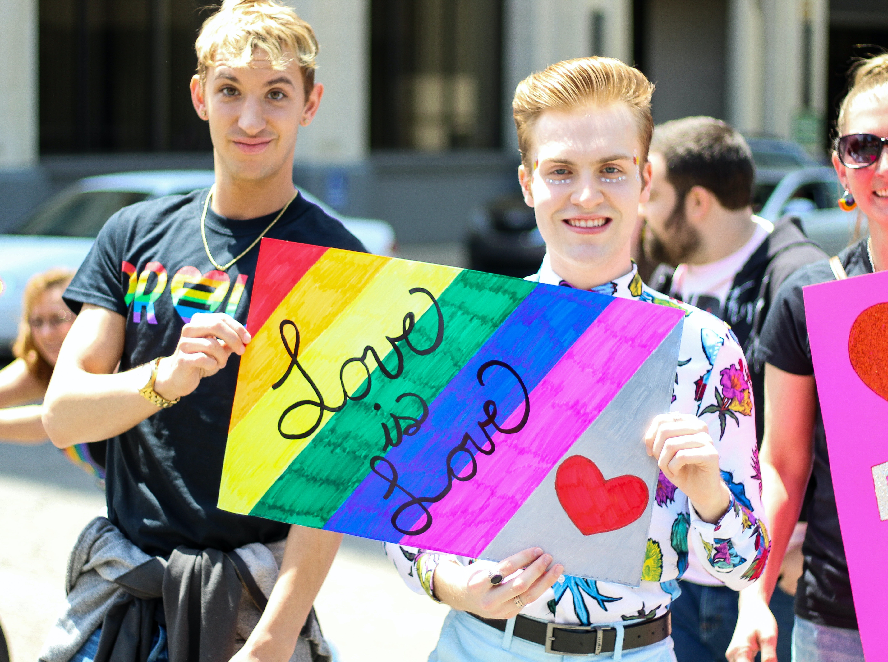

ODS-5 Igualdade de Gênero

Objetivo = Alcançar a igualdade de gênero e empoderar todas as mulheres e meninas
Mais informações sobre as ODS's Clique aqui
Olá pessoal, como estão ?
Antes de tratar sobre a igualdade de gênero,
vamos analisar alguns conceitos que são importantes para começar a compreender:
Igualdade

Um dos princípios que orientam as normas dos Direitos Humanos (v. homem; v. iguais).
Os seres humanos, embora sejam iguais na essência humana, não são iguais nem nascem iguais em direitos e deveres.
A igualdade é construída pela consciência social e requer contínua atenção para não ser ferida.
No mundo atual - em particular no Brasil -, a igualdade entre as pessoas não está ainda assegurada.
Equidade
Igualdade entre homens e mulheres através de medidas que compensem as desvantagens sociais e históricas
e considerem as diferentes necessidades para que homens e
mulheres tenham acesso aos mesmos direitos.
Estereótipos
Crenças inquestionáveis sobre mulheres e homens, que são vistas como verdadeiras e imutáveis.
Levam as pessoas a serem julgadas conforme sua adesão aos papeis de gênero atribuídos a seu sexo.
Papéis

Características e comportamentos que uma sociedade específica em um
momento particular considera apropriados para um sexo específico.
Violência
Violência que sofrem as mulheres, sem distinção de raça, classe social,
religião, idade ou qualquer outra condição, produto de um
sistema social que subordina o sexo feminino.
Socialização

O termo se refere a como os papeis de gênero são aprendidos. Tem impacto
sobre todas as pessoas — desde o nascimento, através da infância, idade adulta e velhice.
Família, escola, amizades, mídia, educação, religião, e a comunidade participam dela. A
socialização nos leva a adotar atitudes e expectativas sobre homens e
mulheres e determina quem tem poder e quem é valorizado.
Alcançar a igualdade de gênero significa acabar com todas as formas de discriminação, violência e práticas
nocivas (como os casamentos prematuros, forçados e mutilações genitais, tráfico e exploração sexual)
contra todas as mulheres e meninas de todo o planeta, tanto nas esferas públicas quanto privadas.
Além disso, também trata-se de reconhecer e valorizar o trabalho doméstico não remunerado,
assegurar o acesso universal à saúde sexual e reprodutiva, garantir a igualdade de direitos
e de oportunidades, promovendo o empoderamento das mulheres em todos os campos.

